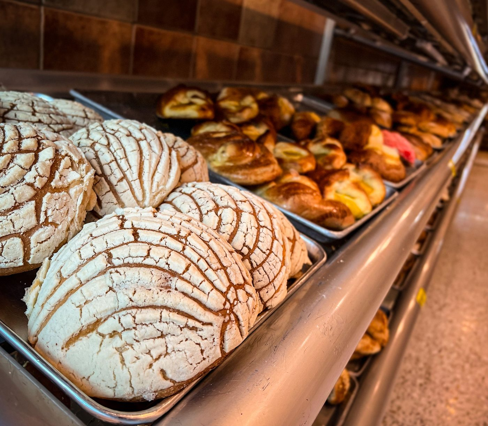

Services at Bakery Margo
An authentic Guatemalan panaderia in Grand Rapids, family-owned, with conchas, sweet breads, pastries, and catering.
Services
Conchas
Conchas, the classic shell-patterned sweet bread.
Cubilets, semitas, and royales
Cubilets, semitas, and royales from the panaderia case.
Cortadas, molletes, and pollitos
Cortadas, molletes, and pollitos.
Champurradas, polvorones, and churros
Champurradas, polvorones, and churros.
Lenguas, campechanas, and coronas
Lenguas, campechanas, and coronas.
Roscas, frances, pirujos, and bolio
Roscas, frances, pirujos, and bolio.
Tortas de queso, cachos con queso, and bolobanes
Tortas de queso, cachos con queso, and bolobanes.
Empanadas
Chocoflan, rosca de reyes, and tres leches
Chocoflan, rosca de reyes, and tres leches.
Catering
Gallery



All gallery photos are stock photos, labeled as such. They show the kind of work and setting described on this page, not this business.
Contact
Bakery Margo serves Grand Rapids, MI. Questions? Call +1 616-456-8000.